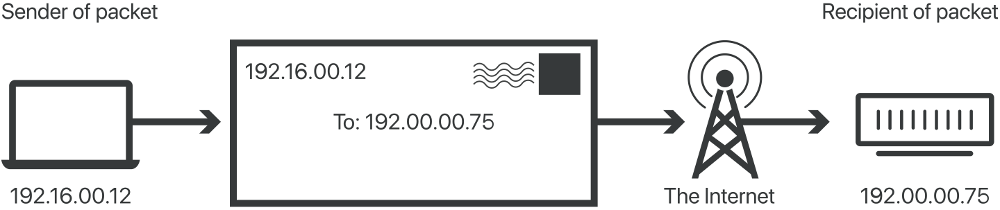

Control protocols on the Internet

In networking, a protocol is a standardized way of doing certain actions and formatting data so that two or more devices are able to communicate with and understand each other. To understand why protocols are necessary, consider the process of mailing a letter. On the envelope, addresses are written in the following order: name, street address, city, state, and zip code. If an envelope is dropped into a mailbox with the zip code written first, followed by the street address, followed by the state, and so on, the post office won't deliver it. There is an agreed-upon protocol for writing addresses in order for the postal system to work. In the same way, all IP data packets must present certain information in a certain order, and all IP addresses follow a standardized format.
